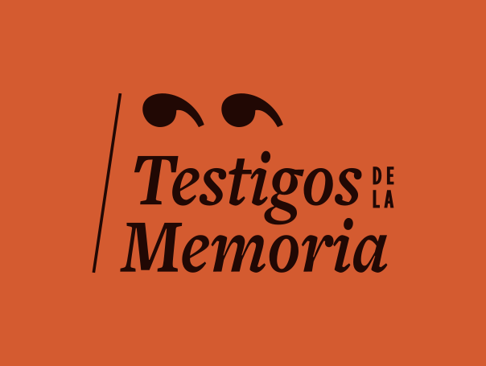

Periodistas en la Historia
Del 5 al 8 de noviembre · 2026
Un recorrido por la historia de Colombia, en la voz de los periodistas que la viven.
Los reporteros e investigadores que cubrieron los hechos que marcaron al país —del Bogotazo a las negociaciones de paz, del narcotráfico a los magnicidios— se reúnen en una serie de conversatorios para contarlos como solo los testigos pueden hacerlo. Daniel Samper Pizano, Darío Restrepo, Cecilia Orozco, Yolanda Ruiz, María Elvira Samper y otros grandes del periodismo colombiano, en un encuentro entre el periodismo y la historia.
Próximamente...